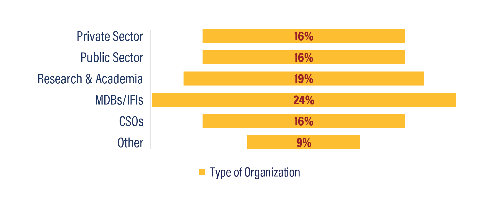

Become a Sponsor
BECOME A SESSION HOST PARTNER
Help shape the conversation around the day’s most pressing mobility issues by becoming a Session Host Partner.
Session Host Partners will design and deliver parallel sessions building on issues discussed in Plenary sessions. Cross-cutting areas and issues associated with poverty reduction, disadvantaged groups and communities, and building back better in the aftermath of COVID-19 are particularly encouraged.
Find out more about the Session Host Partnership here and submit your proposal by Wednesday October 21, 2020.
ADDITIONAL SPONSORSHIP OPPORTUNITIES
Contact us at sponsor@transformingtransportation.org to learn more about the different levels of sponsorship opportunities.
THE FORUM’S COMPARATIVE ADVANTAGE
A global gathering of government decision-makers, CEOs, mobility trendsetters and leading advocates focused on realizing universal sustainable mobility.
A forum with multi-dimensional impact: networking, knowledge sharing, policy discussions, business and partnership development.
18+ years helping drive the global sustainable mobility debate, bringing together public, private and non-profit organizations for impact.
Over the course of 3 days, 5,000 participants from around the world are expected to gather and explore ways to make mobility more accessible, safe, green and efficient for everyone.
A truly inclusive forum, at no cost to development practitioners, aiming to ensure that the right voices, experiences and insights from all spheres of the sector are represented. To maintain this objectivity, the Forum is funded solely by our sponsors and the organizers.
A STRONG, VIRTUALLY ACTIVE, GLOBAL AUDIENCE
31,000
unique livestream
visitors
2,700+
Tweets using
#TTDC20 &
27m impressions
1,100+
participants
from 5 continents
56%
returning
audience
*Figures from Transforming Transportation 2020 Forum
Distribution of participant organizations

SPONSOR VALUE
Virtual Booths
Networking: One-to-one and group meetings
Banner and Logo exposure on Virtual Forum Platform, Website and Social Media
Access to live and pre-recorded streaming and hear from 70+ speakers from government, the private sector and academia
Private one-on-one session with team of WBG/WRI technical experts
To learn about our sponsorship packages, please contact us at sponsor@transformingtransportation.org.